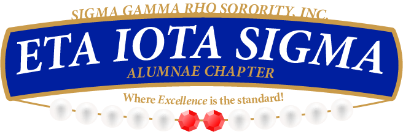
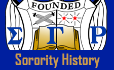

<!doctype html>
<html>

<head>
<meta charset="utf-8">
<title>Home</title>
<link href="Styles.css" rel="stylesheet" type="text/css">
</head>

<header class="header"> 
<nav class="nav"><a href="Index.html" class="navHome">Home</a> 
<div class="dropdown">
	<span><a href="About.html" class="navAbout">About</a></span>
    <div class="dropdown-content">
    	<a class="navDropdownChapHistory" href="ChapterHistory.html">Chapter History</a>
		<a class="navDropdownSoroHistory" href="SororityHistory.html">Sorority History</a>
		<a class="navDropdownLeadership" href="Leadership.html">Leadership</a>
        </div>
       </div>    
    	 <a href="Membership.html" class="navMembership">Membership</a> <a href="Events.html" class="navEvents">Events</a> <a href="Contact.html" class="navContact">Contact</a> <a href="Blog.html" class="navBlog">Blog</a></nav>   
        
    <a href="Index.html"></a>
               
    <p class="username">Username:
        <input type="text" name="username" size="15" maxlength="30" />
    </p>
    
    <p class="password">Password:
    	<input type="password" name="password" size="15" maxlength="30" />
     </p>

     
</header>

<body class="body">

<h1 class="chapterHistoryHeader">Our Beginning</h1>

<p class="chapterHistoryBeginning"> Founded November 12, 1922 by seven educators at Butler University,Indianapolis, Indiana.Eta Iota Sigma, chartered November 3, 1990.</p>

<h1 class="headerWhoAreWe">Who Are We</h1>

<p class="whoAreWeText"> Women bound together in thought and effort toward common goals:

To motivate youth toward greater achievements - academically, socially, and vocationally;
To explore new horizons and meet the challenges of the day;
To encourage the use of one’s talents for the service of our fellow man;
To promote peace and the understanding of the universality of sisterhood;
And to render service wherever needed.
</p>

<h1 class="ourActvitiesHeader">Our Activities</h1>
<p class="ourActivitiesText">Annual Founders Observance with focus on recognizing outstanding contributions of Chapter members, affiliates, and community persons.
Annual awarding of scholarships to youth, chapter members, and affiliates.
SHARE (Self Help And Resource Exchange) Program: Serve as a resource clearinghouse for community-based organization.
Operation Big Book Bag in its first phase, this project provided school supplies to children in homeless shelters, crisis centers, and children's hospitals so that their educational development would not be disrupted.  The second phase focuses on tutoring and mentoring these children.
Monthly meetings at Montgomery County recreation centers for educational, cultural, and social enrichment.
Utilize intra-chapter resources to enhance and support professional development.</p>


<h1 class="chapterHistoryLearnMoreHeader">Learn More</h1>
<a href="SororityHistory.html"></a>
<a href="Leadership.html"></a>
</body>


<footer class="footer">
  <p class="footerText">Copyright © 2016 Sigma Gamma Rho. All Rights Reserved.</p>
</footer>


</html>
